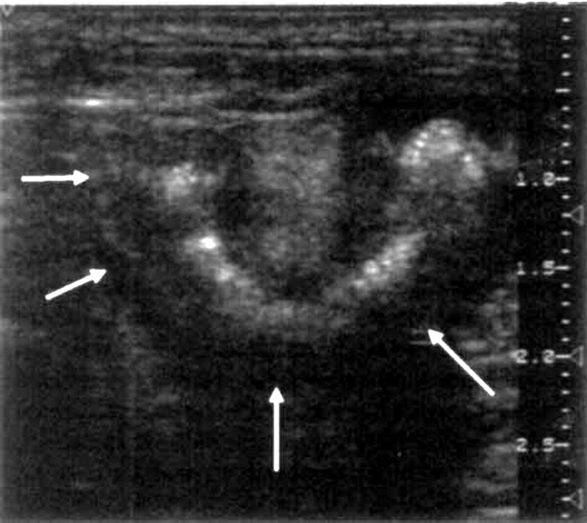
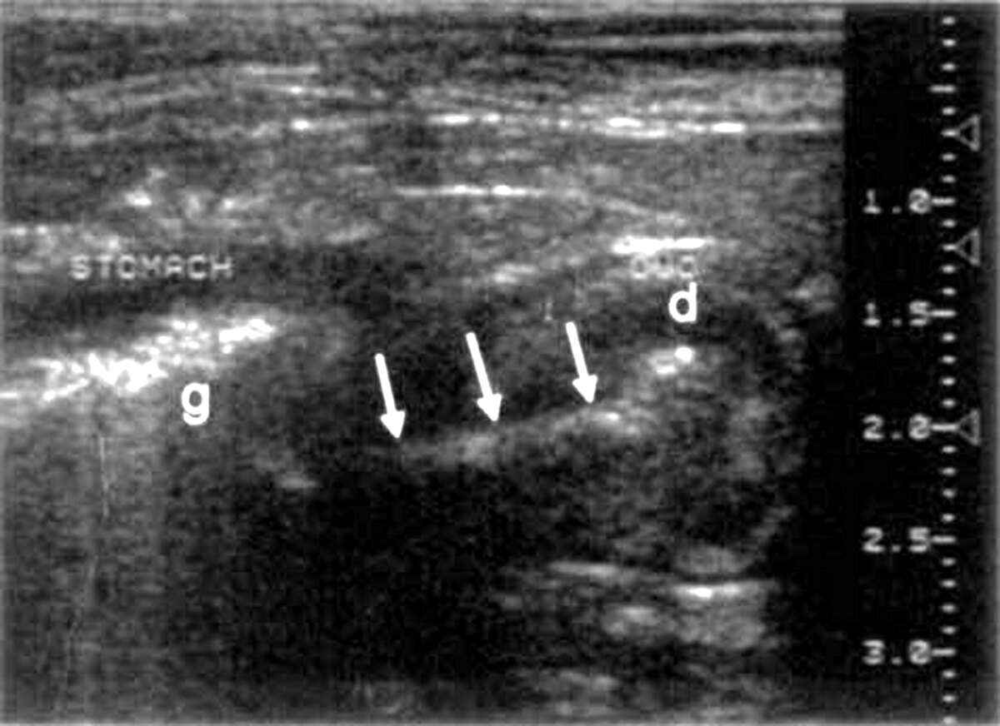
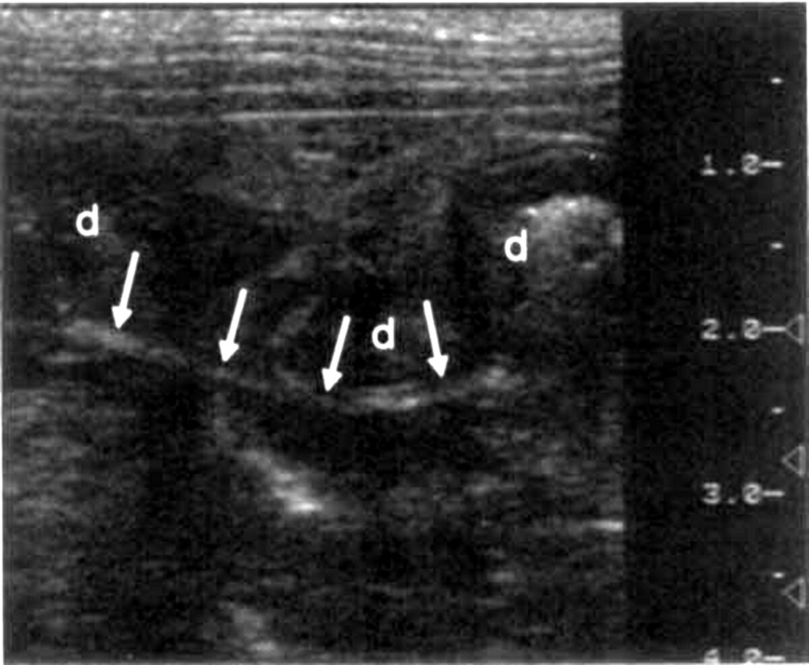
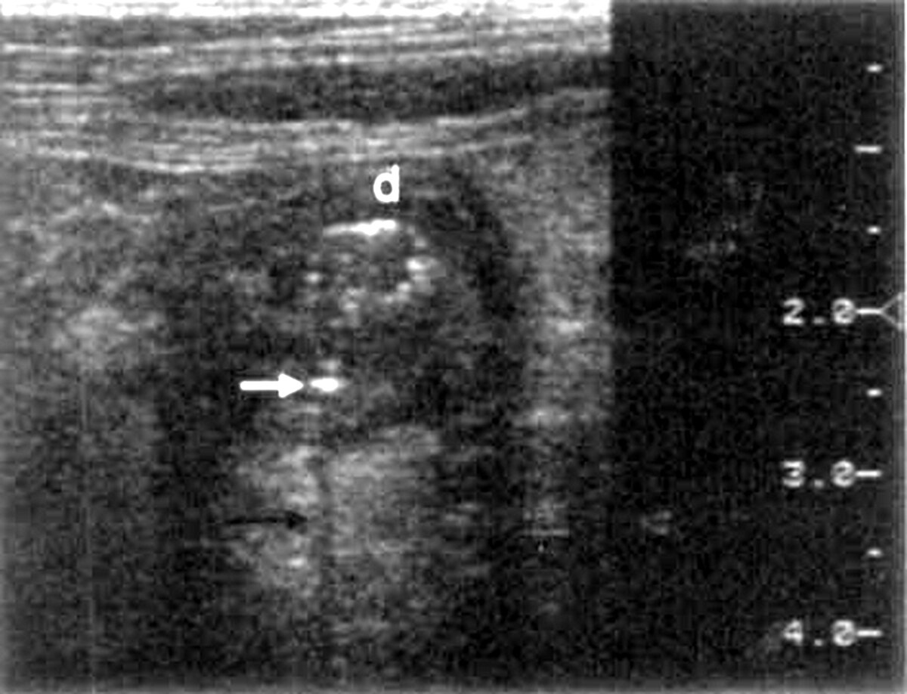

Every step of a retrieval without opening the intestine has been done.
No one has published the whole operation in a hippo, but each part of it has been done. No hippo before her has had this much published knowledge, this many experienced people, and this much support within reach at the same moment.
- Anesthesia at her size. Ten males of 900 to 2,000 kg, a mean of 97 minutes, no deaths. A second anesthetic within the hour in one of them.[1][2] Contact 2: Stalder Contact 3: Walzer
- The stomach reached by tube. One young hippo at Taronga was anesthetized 32 times in six weeks for stomach-tube feeding.[3] Contact 4: Taronga
- An adult's abdomen opened and closed. A 1,200 kg female in Colombia, three and a half hours, tracked alive after release.[4] Contact 1: Villegas Tabares
- The object moved back to the stomach by hand, from outside the bowel. Done in 25 of 58 dogs and cats, with the bowel never opened.[5] Contact 13: Demars, Boland, Minier
- Removal from the stomach by scope or through a port. Pylorus-anchored strands removed by endoscope during laparotomy in 24 dogs and cats.[6] A human bezoar removed through two percutaneous gastrostomy ports.[7] Contact 11: Slovis Contact 12: long gastroscopes
- The anchor cut and the strand released. A string cut in the stomach and drawn down the duodenum.[8]
- Thick skin closed. Cable ties supporting the skin sutures in a pygmy hippo.[9] A calf kept out of the pool for five days and sprayed.[10] Wounds have also failed: the rhinoceros's midline on the second day, the pygmy hippo's skin, and part of the calf's flank incision. Contact 1: Villegas Tabares Contact 8: Cribb
What is reported, what we inferred, and what we do not know
| Publicly reported | Our inference from the literature | Not known to us |
|---|---|---|
| Part of a knit cap swallowed on November 8. Reduced appetite, mild dehydration, normal blood work. Intestinal "bunching" on ultrasound. A 9-foot colonoscope did not reach the material. Some fibers passed. Sedation at least twice, enemas, fluids, pain and anti-nausea medication, a vibration plate. Surgery described as not an option. | The bunching may be bowel gathered on a strand that is held at one end. In other hippos, swallowed objects lodged at the stomach outlet, just beyond it, or further along the small intestine. | What the cap is made of. How much was swallowed and what remains. Where it is. The condition of the bowel. Which examinations have been done, including from the mouth. How she is today. |
Common hippos, rhinos, and elephants have come through surgery
| Animal | Procedure and approach | Outcome |
|---|---|---|
| Common hippo, adult female, about 1,200 kg. Colombia, 2022 Contact 1: Villegas Tabares | Exploratory laparotomy and ovariectomy. Ventilated. Surgery three and a half hours, ten hours in all, at least 30 people. Lead surgeon Juan Pablo Villegas Tabares, Universidad CES. | Survived. Tracked after release. Suturing through skin 2.5 to 5 cm thick was named as the main difficulty.[4][11] |
| Ten male common hippos, juvenile and adult, 900 to 2,000 kg. Contact 2: Stalder Contact 3: Walzer Contact 14: Petit, Horowitz | Medetomidine and ketamine for a mean of 97 minutes. Castration through an inguinal incision 20 to 30 cm deep. | All ten survived. Apnea of one to nine minutes in five, with no change in heart rate, pH, or oxygen saturation. Nine back in the pool within 30 minutes. One eventration through an old hernia, repaired under a second anesthetic.[1][2] |
| Common hippo calf, 120 kg, 8 to 10 months. Colombia Contact 1: Villegas Tabares | Flank laparotomy and ovariectomy, after the laparoscopic trocar would not pass the lax peritoneum. Out of the pool five days, sprayed with water. | Survived. Part of the incision opened at two weeks. Closed at 34 days.[10] |
| Pygmy hippo, 278 kg. | Midline laparotomy, ileal resection and anastomosis for an incarcerated hernia. | Survived the surgery. The skin closure broke down and needed a second operation, with cable ties supporting the sutures. Nine weeks in hospital.[9] |
| White rhinoceros, 2,000 kg. Canada Contact 8: Cribb | Emergency midline celiotomy for colic. Standing 10.4 hours after induction. | Died. Eviscerated through the incision on the second day and was euthanized. The midline was closed with umbilical tape when there was no time to use wire.[12] |
| White rhinoceros calf, 10 months. South Africa | Emergency exploratory celiotomy, 3.5 hours of anesthesia. | Anesthesia reported as safely managed. The abstract does not give the surgical outcome.[13] |
| Fourteen wild African elephants. Contact 6: Hendrickson Contact 7: Stetter | Laparoscopic vasectomy through both flanks, standing in a sling. | Thirteen alive at eight months. Three bowel lacerations sutured. Skin incisions healed. One found dead at six weeks.[14] |
The calf and the elephants were opened through the flank, and the rhinoceros and the pygmy hippo on the midline. The report of the adult hippo in Colombia does not say where she was opened. A pygmy hippo's cesarean wound also broke down and healed by second intention.[15] Before the medetomidine and ketamine protocol, 38% of hippo immobilizations had complications and 13% reached surgical depth.[2]
We found no published operation on the stomach or bowel of an adult common hippo.
- After flexible endoscopy failed, a human trichobezoar was removed through two large percutaneous gastrostomy ports, a laparoscope in one and instruments in the other. The authors proposed such ports as access for other procedures inside the gut.[7]
A forestomach opening sutured to the flank, as in a cannulated cow, has not been reported in a hippo.
The anesthetic protocol as published. Medetomidine 60 to 80 µg/kg with ketamine 1 mg/kg, intramuscular by dart at the base of the ear. Complete immobilization and a surgical plane at 27 ± 11.8 minutes (range 14 to 44). Anesthesia held for 97 ± 35 minutes (range 57 to 188) with a median of three further intravenous ketamine doses of 0.1 to 0.4 mg/kg. Reversal with atipamezole 0.34 ± 0.06 mg/kg. Transitory apnea of 1 to 9 minutes in five animals, with heart rate, pH, SpO2, venous PCO2, lactate, and bicarbonate unchanged; the authors regard it as a physiologic dive response.[1]
The gastrostomy-port technique as published. "Two large-diameter percutaneous gastrostomies with an inflatable balloon and distal foam-rubber stent to assure intragastric positioning were introduced under general anesthesia. Visualization was provided by a 0° panavision laparoscope placed through one of the gastrostomies. The bezoar was removed through the second gastrostomy using standard laparoscopic instruments. The patient made an uneventful recovery."[7]
Agents have been delivered straight to the obstruction
- A small-bowel ileus from a migrated bezoar resolved on the fifth day of 1,000 mL of cola a day given through an ileus tube.[16]
- Ileus tubes placed by the anterior-balloon method reached a mean of 222 cm in 52 patients.[17]
- A cat's wedged jejunal trichobezoar, beyond the reach of the endoscope, was treated with 55 mL of Coca-Cola through an injection catheter. The cat recovered without complications. Canadian Veterinary Journal, 2023.[18]
- In the equine series above, one animal had acetylcysteine injected into the bezoar itself.[19]
- Horses with gas distension are decompressed by a trocar through the flank into the cecum or colon.[20] In six healthy horses this inflamed the peritoneal fluid for 14 days without clinically relevant peritonitis, and a cecal needle did less harm than a cattle trocar.[21]
- A young common hippo with tetanus and lockjaw at Taronga Western Plains Zoo was anesthetized 32 times in six weeks to be fed by stomach tube, and recovered.[3] Contact 4: Taronga
- In a standing elephant, laparoscopy through the flank was used to instil fluids and antibiotics into the abdomen.[22]
We found no report of an ileus tube made at hippo length. It would be a custom build.
Retrieval and cutting beyond a colonoscope's reach
- During laparotomy, surgeons moved intestinal foreign bodies back into the stomach for a gastroscope to remove, without opening the bowel, in 25 of 58 dogs and cats. Three attempts tore the serosa and were converted to enterotomy.[5] Contact 13: Demars, Boland, Minier
- Balloon-assisted enteroscopy retrieved small-bowel foreign bodies in 17 of 34 people; 13 went to surgery.[23] The enteroscope has a 2,000 mm working length, shorter than the 9-foot colonoscope already tried. Contact 11: Slovis Contact 12: long gastroscopes
- A large hair bezoar was cut into pieces with endoscopic scissors and removed with forceps and a net. The mucosa beneath it was undamaged.[24]
- Argon plasma and snare cautery on a bezoar of human and doll's hair were followed by multiple perforations of the stomach and small bowel. The doll hair was hazardous when burned. Across the literature, endoscopic removal of trichobezoars succeeded in 30.7% of attempts.[25]
- Endoscopic laser lithotripsy has broken up a giant duodenal bezoar.[26]
- In horses, swallowed foreign material such as nylon fiber, twine, and hay nets lodges mostly in the small colon. In 29 equids operated on for it, 79% left hospital and 41% had complications. Equine Veterinary Education, 2019.[27] Contact 9: Mudge Contact 10: Lescun
- Eight foals that ate synthetic fiber from conveyor belting used as fencing all needed surgery, and seven survived. Pferdeheilkunde, 1999.[28]
- Twenty camels with swallowed foreign material in the rumen and reticulum had it removed by rumenotomy, and all but one had fully recovered at six months. On ultrasound the material was hyperechoic with variable shadowing.[29]
In dogs and cats, bowel bunched around a strand is held by an anchor upstream
In 499 dogs with gastrointestinal foreign bodies, 150 of the 176 linear ones (85.2%) were anchored in the stomach and continued into the small intestine. They caused more necrosis, perforation, and resection than discrete objects. Endoscopy retrieved 1 of the 5 linear ones it was tried on, against 33 of 52 discrete objects.[30] On ultrasound a linear foreign body shows as bowel thrown into U-shaped, scalloped turns around a bright line in the lumen, which can be followed back to a shadowing mass in the pylorus. Cut across, the line is a single bright point with an acoustic shadow. In one of the three dogs, radiographs showed no sign of it and ultrasound did. In another, the surgeon cut the string in the stomach and drew it down the duodenum, and the dog went home in three days.[8] In 64 cats with thread, examining the mouth together with abdominal palpation made the diagnosis in about 75%.[31]
The signs as published. "An abnormal tortuous path of the descending duodenum, the presence of a hyperechoic linear structure within the duodenal lumen which was carefully followed orally to the pylorus. The presence of a mass with strong acoustic shadow within the pylorus may also be imaged. The normal intestinal layers were present in the duodenal wall. In real time, the intestinal path was followed through many 'hairpin' turns, and during this process the lumen was observed for identification of a linear structure." Scanned from the right abdominal wall with a 10 to 5 MHz linear transducer.[8]




Images of two dogs, not Fiona's imaging. Reproduced from Hoffmann KL. Sonographic signs of gastroduodenal linear foreign body in 3 dogs. Veterinary Radiology & Ultrasound 2003;44:466-469, Figures 2 to 5. Levels stretched; the sliders change the display only.
Of 24 cats with linear foreign bodies, 9 passed them within one to three days on conservative management and 15 had surgery, 10 of them after conservative management failed. None died. Conservative management was observation, fluids, and cutting free any string caught under the tongue. The string was around the base of the tongue in 13 of the 24, and was missed at the first examination in six of them. A missed tongue anchor was the main reason conservative management failed in three cats, and three more were fixed at the pylorus. The cats that passed them had shorter histories and less palpable plication.[32] Strands anchored at the pylorus were removed by endoscope during laparotomy in 24 dogs and cats with no septic peritonitis, against 2 cases in 121 after gastrotomy.[6]
Corrugated bowel on ultrasound has other causes. In 24 dogs and cats it was pancreatitis in 12, peritonitis in 4, and infarction in 1.[33] Contrast-enhanced ultrasound showed reduced or absent wall perfusion in four cats with intestinal ischemia whose gray-scale and Doppler findings were non-specific.[34]
Where swallowed objects lodged in other hippos
These are necropsy reports, so they record only deaths, and nearly all of them rigid balls. In three, the object was at the stomach outlet or within a hand's breadth of it, and in three more it was reported in the small intestine. None was cloth. These reports say where other objects stopped, and nothing about where Fiona's cap is. The Brazilian authors cite an international survey of hippo disease in which digestive obstruction occurred occasionally and the signs cleared without treatment in two to three days, with other animals recovering on antibiotics and antispasmodics. The specialist advising the zoo has said she knows of two hippos that passed their objects.
| Hippo | Object | Where it lodged | Course | Source |
|---|---|---|---|---|
| Bull, Mendoza, Argentina, 2015 | Tennis ball, 7 cm | "At the exit of one of the stomachs, where it connects to the intestine" | Found dead. Stomachs full, intestines empty. The ball was twice the diameter of the intestine. | Government of Mendoza |
| Bull, 39 years, Frankfurt, Germany, 2014 | Tennis ball | "About a hand's breadth beyond the stomach outlet, in the first part of the duodenum" | No appetite and no dung; died within five days. Stomach massively overloaded, breathing impeded, circulatory failure. | Hessisches Landeslabor, 2014 report, p. 18 |
| Bull, Patna, India, 2001 | Tennis ball, intact | "Stuck up in the opening between stomach and duodenum" | Constipated for months, acute for the last 20 days. | Times of India |
| Female, 2 years, about 800 kg, Pernambuco, Brazil, 2006 | Mango stone, 7 × 6 cm | Small intestine, completely blocked | No appetite or dung, no visible distension. Mineral oil and an antispasmodic by mouth. Died on day 10 of treatment, with ischemic necrosis of the bowel wall. | Cunha et al., Biológico 68 (suppl.): 232–235 |
| Female, 4,300 lb, Norfolk, Virginia, 1996 | Rubber racquetball, 2 inches | Small intestine | Ill for about a month. Surgery judged too great a gamble. | Virginian-Pilot |
| Bull, Kobe, Japan, 1985 | Rubber baseball | Small intestine | Died of obstruction. His father had died of gastritis from swallowed plastic bags. | Oji Zoo newsletter 19 |
| Bull, 17 years, Kronberg, Germany, 1996 | Tennis ball | Intestine | Died of obstruction. | Opel-Zoo, 2010 report |
| Kyoto, Japan, before 1969 | Sponge ball | Intestine | Died of obstruction. | Japanese zoo survey, 1969 |
| Two hippos, Maracay, Venezuela | Plastic bags and stones in one | Intestine | One died of obstruction. The second died in 2010 after about 15 days of lethargy, poor appetite, and pain. | AnimaNaturalis |
The hippo stomach has four chambers. The esophagus opens into a vestibule with two blind sacs, one ending in a narrow conical tip. A long, U-shaped, tube-like connecting chamber lined with transverse folds leads to the glandular stomach and the pylorus. The opening from the blind sac into the connecting chamber is narrowed by a fold.[35]
In one wild common hippo the small intestine measured 39.1 m and the large intestine 8.2 m, with no cecum and a muscular ring at the junction.[36] A 9-foot colonoscope is 2.7 m. By these figures the stomach outlet is tens of meters upstream of it. In a 14-month-old of about 380 kg, the opening into the third stomach chamber was about 2 inches across and the distended small intestine 1¼ to 1¾ inches. Crisp, Proceedings of the Zoological Society of London, 1867.
The published numbers, scaled to Fiona
Fiona was born on January 24, 2017, and is reported at 2,000 to 2,400 lb, about 900 to 1,090 kg. She swallowed the cap on November 8. The figures below are arithmetic on published values at 1,000 kg, and are not doses.
- Time. Eleven days is 264 hours, against a mean particle retention of 48 to 106 hours in the common hippo. Cotton thread in a rumen had 6% of its strength or none left at 56 hours. The Frankfurt bull died within five days of his first signs.
- Anesthesia. The published protocol comes to 60 to 80 mg of medetomidine and 1,000 mg of ketamine by dart, with about 340 mg of atipamezole to reverse. The ten hippos it was used on weighed 900 to 2,000 kg, and all were male.
Cotton thread has been weakened inside a living gut
Cotton thread suspended in a cow's reticulo-rumen lost more than half its breaking load within 32 hours at every site tested, and by 56 hours held 6% or nothing. In people, cellulase has cleared plant-fiber bowel obstructions without surgery. If the cap is cotton or another cellulose fiber, these are the nearest published findings. If it is wool, acrylic, or polyester, they are not.
Hippos ferment plant fiber in the forestomach with microbes, as ruminants do.[37] Cotton yarn incubated in rumen contents loses weight and tensile strength, and the attack almost stops when pH falls from 7.0 to 6.0.[38] Cotton thread suspended at three sites in a cow's reticulo-rumen broke at 1.1 kg before immersion and held 94% to 99% of that at 8 hours. At 16 hours it held 86%, 54%, and 44% of its breaking load, at 32 hours 44%, 11%, and 3%, and at 56 hours 6% at one site and nothing at the other two. It lost strength faster than it lost mass.[39]
| Hours immersed | Dorsal rumen | Ventral rumen | Reticulum |
|---|---|---|---|
| 8 | 94% | 99% | 98% |
| 16 | 86% | 54% | 44% |
| 32 | 44% | 11% | 3% |
| 56 | 6% | 0 | 0 |
Mixed rumen microbes hydrolyzed cotton fibers almost completely in vitro.[40] A cellulase from the rumen fungus Neocallimastix frontalis solubilized cotton cellulose several times faster per unit than a Trichoderma cellulase.[41] Transfers of 1 to 5 liters of rumen fluid restored rumen function in a randomized trial of 45 cattle.[42]
In the hippo, fermentation happens in the anterior chambers of the stomach, and the posterior chamber secretes gastric juice.[43] Particle markers have a mean retention of 48 to 106 hours in the common hippo.[44]
What is the cap made of?
Cotton or linen: cellulase has cleared cellulose obstructions in people
Cotton and linen are cellulose. Cellulase cleaves it; dyes, finishes, and tight yarn slow its access. Both acid and neutral cellulases are used on cotton fabric.[45]
- A 58-year-old man had a complete obstruction from a phytobezoar in the distal ileum, after two earlier operations for the same thing. He was given 5 g of cellulase in 500 mL of water a day by nasogastric tube, clamped for six hours, with 10 mg of intravenous metoclopramide. Bowel movements returned on the second day and the obstruction resolved. After five days the partly degraded bezoar was in the rectum. He had no recurrence in two years. Cirugía Española, 2014.[46]
- Three large phytobezoars were treated with pure cellulase (Roig Farma-Fagron), 5 g in 300 mL of water instilled over two hours a day by nasogastric tube. A gastric one that four days of cola lavage had not shifted was gone after five days. A second gastric one left a 4 cm mass after five days, which was removed by snare. One in the efferent intestinal loop, partly broken up with forceps first, was gone on CT after 72 hours. None had adverse effects. The authors count about thirty published patients, with one reported obstruction from migrating fragments. Farmacia Hospitalaria, 2009.[47]
- Two small-bowel obstructions from persimmon bezoars resolved with sodium bicarbonate delivered by catheter, plus decompression. No enzyme was used. American Journal of Case Reports, 2025.[48]
- A gastric persimmon bezoar that cola had not cleared resolved once a cellulase supplement, 3,000 CU twice a day, was added to diet soda. ACG Case Reports Journal, 2017.[49]
- In 13 horses, donkeys, and ponies with persimmon phytobezoars, medical treatment resolved 5 of 7 gastric bezoars. Cola was given by nasogastric tube, in one horse as a constant infusion of 1 L an hour for two days, with pelleted feed. Two animals also received cellulase, at a dose the paper does not give. Of the 5 with bezoars in the intestine, 1 survived a year. JAVMA, 2011.[19]
- Coca-Cola alone resolved gastric phytobezoars in 23 of 46 people, and cola followed by endoscopy resolved 42 of 46. Alimentary Pharmacology & Therapeutics, 2013.[50]
- Cellulase removed up to 5.26% of the weight of cotton fabric in five days at room temperature, and 10.54% of its bursting strength in a separate test. Heliyon, 2024.[51]
- On knitted cotton treated with purified cellulases, weight loss did not correlate with strength loss. After two hours at pH 5 and 50°C, one endoglucanase alone took 7.8% of the bursting strength for 0.7% of the weight, and the other three enzymes took 2.2% to 3.5%. Textile Research Journal, 2001.[52] An endoglucanase rapidly cut the chain length of cotton cellulose, while the paired cellobiohydrolase alone was practically inactive on cotton.[53]
- Enzymes hydrolyzed 88% of the cellulose in pure cotton material and 76% in real textile waste, after grinding to 1 mm and five days at pH 4.8 and 50°C. Polymers, 2018.[54]
- A bezoar of cotton thread lodged in the ileum and was removed surgically. No dissolution was attempted. BMC Surgery, 2003.[55]
Rayon, viscose, lyocell, or bamboo: also cellulose, but no cases
These are regenerated cellulose, and cellulase can hydrolyze them. No bezoar of these fibers has been reported. The nearest precedent is the cellulase cases for plant fiber.
Wool: a keratinase removed 40% of wool in 12 hours at body temperature
Wool, cashmere, and alpaca are keratin. Cellulase does nothing to them. A keratinase, KerFJ, removed 39.7% of wool mass in 12 hours at 37°C and pH 8.0, with agitation, at 2,500 U/mL. Its peak activity is at 55°C and pH 9.5. It is not specific to keratin: against gelatin as 100%, its activity was 24.7% on casein, 13.9% on wool keratin, 12.3% on hemoglobin, and 2.8% on albumin, with none on collagen. It stripped the hair from sheep, donkey, and pig skin and left the collagen fibers intact under electron microscopy.[56]
Silk: no precedent
Silk is fibroin, a protein unlike both keratin and cellulose. No clinical treatment dissolves swallowed silk.
Polyester: the enzymes were built for recycling
Engineered enzymes depolymerize polyester for recycling, with activity measured as low as 30°C.[57][58] In an enzymatic separation of a wool, cotton, and polyester blend, the polyester was what remained.[54]
Acrylic or nylon: no dissolution treatment, and removal has been mechanical
No enzyme is known to break down intact acrylic or nylon yarn in a living gut. A gastric bezoar of hair and synthetic yarn was extracted by endoscope with a variceal ligator cap. Frontiers in Medicine, 2022.[59]
Blend or unknown: an enzyme removes one fiber and leaves the rest
One cap can contain several materials: body yarn, a ribbed band with elastane, sewing thread, a label, a pom-pom. When enzymes hydrolyzed the wool out of a wool, polyester, and elastane fabric, the polyester and elastane fabric stayed intact.[60]
AATCC TM20 is the standard method for identifying textile fibers. It can be run on a matching cap or on fibers Fiona has already passed.
Dissolving part of a knit can make it more dangerous
A knit is one or a few continuous yarns looped together.[61][62] Weakening it can release meters of strand instead of short pieces. A strand anchored at one end is a linear foreign body, which plicates the intestine and injures it by traction. Bezoar fragments can lodge again further down.[63] Papain, an older bezoar treatment, has caused gastric ulceration and esophageal perforation.[64] A persimmon bezoar partly dissolved with cola went on to obstruct the small intestine.[65]
The measure of any treatment is whether what remains is short, soft, and separate. Less mass is not enough.
A matching cap can be tested on a bench
Infrared spectroscopy identifies textile fibers without destroying the sample, and tells wool, silk, and nylon apart.[66] The parts of a cap can differ: body yarn, band, seam, and trim. Fibers already passed can be read the same way.
A bench test would expose the knit to candidate cellulase mixtures at body temperature and gut pH, and to rumen contents drawn from a cannulated cow.[67] The measurements that matter are wet breaking force, the longest surviving strand, and whether the loops are still connected, at 2, 6, 12, and 24 hours.
Where the published cases branched
No source lays out this sequence, and none gives a threshold for a hippo. Each box is what a published case did at that point, tagged by where it was done.
Ten male hippos were anesthetized without a death, and one young hippo 32 times in six weeks.[1][3] Hippo
The ultrasound signs of a strand held at one end are published, with images.[8] Other species
Corrugated bowel alone had other causes in 24 dogs and cats: pancreatitis, peritonitis, and infarction.[33] Other species
A 9-foot colonoscope is 2.7 m, and one hippo's small intestine measured 39.1 m, so a scope that did not reach the material does not place it.[36] Inference
Continues at 2.
This was the pattern in 150 of 176 dogs with linear objects.[30] Other species
Strands anchored at the pylorus were removed by endoscope during laparotomy in 24 dogs and cats. The series left out animals whose intestine had to be opened.[6] Other species
In one dog the string was cut in the stomach and drawn down the duodenum.[8] Other species
After endoscopy failed, a human bezoar was removed through two gastrostomy ports.[7] Other species
With the abdomen open, the object was moved back to the stomach by hand and the intestine left unopened in 25 of 58 dogs and cats. In three, the serosa tore and the intestine was opened.[5] Other species
Balloon enteroscopy retrieved small-bowel objects in 17 of 34 people.[23] Other species
Cola was delivered to the obstruction by ileus tube in a person and by catheter in a cat.[16][18] Other species
Of 24 cats with linear objects, 9 passed them within one to three days on fluids and observation.[32] Other species
The delivery cases above were treated without surgery.[16][18] Other species
The material decides what can be delivered: continues at 4.
Contrast-enhanced ultrasound showed reduced or absent wall perfusion in four cats with intestinal ischemia.[34] Other species
Ten cats went to surgery after conservative management failed. None died.[32] Other species
A 1,200 kg female hippo's abdomen was opened and closed in three and a half hours, and she was tracked alive after release.[4] Hippo
A pygmy hippo survived resection of the ileum.[9] Hippo
Cotton thread in a cow's rumen kept 6% of its strength or none at 56 hours.[39] Other species
Cellulase by nasogastric tube cleared plant-fiber obstructions of the small bowel in people.[46][47] Other species
A keratinase removed 39.7% of wool mass in 12 hours at 37°C.[56] Laboratory
For any material: partly dissolved bezoars have moved on and obstructed the small intestine.[63][65] Other species
No source gives a threshold for a hippo. Mean particle retention in common hippos is 48 to 106 hours.[44] Hippo Cats that passed a string did so in one to three days.[32] Other species Cotton thread in a rumen had lost its strength by 56 hours.[39] Other species Each of these clocks starts from a different event.
Equipment leads
These are published listings, gathered so that nobody has to start from a search. Nothing here has been reserved, and none of it has been checked for fit, availability, or transport.
| For | What would need to be established | Leads |
|---|---|---|
| Upper endoscopy | Working length, outer diameter, and channel size. Processor and light source. Suction, irrigation, and insufflation. An operator. | Contact 12 Stillwater Equine, Minnesota, advertises a flexible 3.5 m video endoscope. Equine Specialty Hospital, Burton, Ohio, describes 3 m gastroscopy. Endoscopy Support Services lists 3 m and 3.5 m veterinary videoscopes. |
| Retrieval tools | Graspers, snares, or nets long enough to pass beyond the scope, and their jaw opening. | The same vendor lists a 2.4 mm × 230 cm grasping forceps with a 15 mm jaw, which is shorter than a 3 m scope. Longer instruments were not found. |
| Stomach tube | Length, diameter, stiffness, and tip. How placement was confirmed. | Contact 4 Taronga, for what was used on their hippo. |
| Surgical instruments at this scale | Long retractors and graspers, closure materials, lighting, suction, and lavage. | Contact 1 for what the adult hippo required. Contact 6 and Contact 7 for megavertebrate equipment. Contact 9 and Contact 10 for a regional surgical set and team. |
| Prolonged anesthesia | Airway, large-animal ventilation, oxygen reserve, monitoring, and blood gases. | Contact 2 and Contact 3 for the specification. Hallowell makes the Tafonius large-animal machine, which it rates for animals of 100 to 2,000 lb. |
Published expertise, and funding
- Fiber identification. Infrared spectroscopy on what is left of the cap, part by part, and on fibers already passed, at a textile or forensic laboratory.
- A bench test. A matching cap in cellulase mixtures and in rumen contents, scored on breaking force and strand length.
- People with first-hand experience. The zoo has not asked for any of them, and nobody's availability has been confirmed. Their published contact details are in the printed copy sent to the zoo.
- Juan Pablo Villegas Tabares. Universidad CES, Colombia. Led the 2022 laparotomy on the 1,200 kg female.
- Dr. Gabrielle Stalder. University of Veterinary Medicine Vienna. First author of the hippo anesthesia protocol.
- Prof. Chris Walzer. Wildlife Conservation Society. Led the ten castrations.
- Wildlife Hospital veterinary team. Taronga Western Plains Zoo, Australia. Anesthetized a hippo 32 times for stomach-tube feeding.
- Dr. Gabriella Flacke. Zoo Miami. Author of the pygmy hippo mortality study.
- Prof. Dean Hendrickson. Colorado State University. Led the elephant laparoscopies.
- Dr. Mark Stetter. UC Davis. Co-led the same elephant program.
- Dr. Nicola Cribb. University of Guelph. A surgeon on the rhinoceros celiotomy.
- Dr. Margaret Mudge. Ohio State University. Equine emergency surgery and critical care.
- Prof. Timothy Lescun. Purdue University. Large-animal surgery.
- Dr. Nathan Slovis. Hagyard Equine Medical Institute, Lexington. Equine endoscopy.
- Long gastroscopes. Equine practices in Burton, Ohio, and Stillwater, Minnesota, advertise 3 m and 3.5 m video gastroscopes.
- Dr. Claire Demars, Dr. Laetitia Boland and Dr. Kévin Minier. France. Described retrieval through the stomach without opening the bowel.
- Dr. Thierry Petit and Dr. Igal Horowitz. Zoo de La Palmyre and Ramat Gan Safari. Co-authors of the hippo series.
- H. Toro and R. Mattiello. Argentina. Hernia surgery in a juvenile hippo.
- Funding for any of it, and for anything else the team asks for.
To Fiona's care team. The decisions are yours. Funding is available for whatever you choose to try: equipment, laboratory work, materials, custom fabrication, or bringing in specialists. Write to mail.fiona@hippo.example.baby from any @cincinnatizoo.org address.
References
- Stalder GL, Petit T, Horowitz I, et al. Use of a medetomidine-ketamine combination for anesthesia in captive common hippopotami (Hippopotamus amphibius). Journal of the American Veterinary Medical Association. 2012;241(1):110-116. doi:10.2460/javma.241.1.110
- Walzer C, Petit T, Stalder GL, et al. Surgical castration of the male common hippopotamus (Hippopotamus amphibius). Theriogenology. 2014;81(3):514-518. doi:10.1016/j.theriogenology.2013.10.018
- Taronga Conservation Society Australia. Annual Report 2019–2020, p. 35. Parliament of New South Wales. 2020. files.parliament.nsw.gov.au
- Cornare. Después de ser declarados animales exóticos e invasores, una hembra de hipopótamo fue esterilizada de manera exitosa en Colombia. Corporación Autónoma Regional de las Cuencas de los Ríos Negro y Nare. 2022. cornare.gov.co
- Demars C, Boland L, Minier K. Surgical removal of intestinal foreign bodies using a laparotomy‐assisted endoscopic approach in dogs and cats and comparison with enterotomy. Journal of Small Animal Practice. 2022;64(1):43-50. doi:10.1111/jsap.13550
- Zitsman J, Ford R, Baginski H, et al. Comparative outcomes following laparotomy-assisted endoscopic removal or gastrotomy for treatment of linear foreign bodies in dogs and cats. Canadian journal of veterinary research = Revue canadienne de recherche veterinaire. 2025;89(4):123-129. PMID 41070218
- Filipi CJ, Perdikis G, Hinder RA, et al. An intraluminal surgical approach to the management of gastric bezoars. Surgical Endoscopy. 1995;9(7):831-834. doi:10.1007/BF00190094
- Hoffmann KL. Sonographic signs of gastroduodenal linear foreign body in 3 dogs. Veterinary Radiology & Ultrasound. 2003;44(4):466-469. doi:10.1111/j.1740-8261.2003.tb00486.x
- O'Connor L, Downs C, Langan JN, et al. Perioperative management of umbilical herniorrhaphy with ileal resection and anastomosis in a pygmy hippopotamus (Choeropsis liberiensis). Veterinary Record Case Reports. 2023;11(4). doi:10.1002/vrc2.677
- Hernández CA, Ruiz IC, Villegas JP, et al. Ovariectomy in a common hippopotamus (Hippopotamus amphibius). Journal of Zoo and Wildlife Medicine. 2015;46(2):374-377. doi:10.1638/2014-0129R1.1
- Cornare. Pruebas de seguimiento por telemetría, la nueva estrategia para conocer más sobre los hipopótamos. Corporación Autónoma Regional de las Cuencas de los Ríos Negro y Nare. 2022. cornare.gov.co
- Valverde A, Crawshaw GJ, Cribb N, et al. Anesthetic management of a white rhinoceros (Ceratotherium simum) undergoing an emergency exploratory celiotomy for colic. Veterinary Anaesthesia and Analgesia. 2010;37(3):280-285. doi:10.1111/j.1467-2995.2010.00534.x
- Zeiler GE, Stegmann GF. Anaesthetic management of a 10-month-old white rhinoceros (Ceratotherium simum) calf for emergency exploratory celiotomy. Journal of the South African Veterinary Association. 2012;83(1). doi:10.4102/jsava.v83i1.939
- Rubio‐Martínez LM, Hendrickson DA, Stetter M, et al. Laparoscopic Vasectomy in African Elephants (Loxodonta africana). Veterinary Surgery. 2014;43(5):507-514. doi:10.1111/j.1532-950X.2014.12163.x
- Flach EJ, Furrokh IK, Thornton SM, et al. Caesarean section in a pygmy hippopotamus (Choeropsis liberiensis) and the management of the wound. Veterinary Record. 1998;143(22):611-613. doi:10.1136/vr.143.22.611
- Hashimoto K, Omori M, Yoshimura E, et al. A case of small intestinal ileus caused by migration of gastric bezoars, which was successfully treated by dissolution therapy with cola through an ileus tube [in Japanese]. Nihon Shokakibyo Gakkai Zasshi. 2016;113(5):798-803. doi:10.11405/nisshoshi.113.798
- Yamaguchi D, Ikeda K, Takeuchi Y, et al. New insertion method of transnasal ileus tube for small bowel obstruction: Anterior balloon method. PLOS ONE. 2018;13(11):e0207099. doi:10.1371/journal.pone.0207099
- Wilson S, Dobbins D, Kawalilak L, et al. Endoscopic administration of Coca-Cola for medical management of a wedged intestinal trichobezoar in a cat. The Canadian veterinary journal = La revue veterinaire canadienne. 2023;64(8):747-752. PMID 37529386
- Banse HE, Gilliam LL, House AM, et al. Gastric and enteric phytobezoars caused by ingestion of persimmon in equids. Journal of the American Veterinary Medical Association. 2011;239(8):1110-1116. doi:10.2460/javma.239.8.1110
- Schroeder EL, Gardner AK, Mudge MC. How to perform a percutaneous cecal or colonic trocarization in horses with severe abdominal tympany. Journal of Veterinary Emergency and Critical Care. 2022;32(S1):57-62. doi:10.1111/vec.13123
- Dória RGS, Reginato GM, Hayasaka YdB, et al. Complications following transcutaneous cecal trocarization in horses with a cattle trocar and a cecal needle. PLOS ONE. 2022;17(11):e0277468. doi:10.1371/journal.pone.0277468
- Sweet J, Hendrickson DA, Stetter M, et al. Exploratory rigid laparoscopy in an African elephant (Loxodonta africana). Journal of Zoo and Wildlife Medicine. 2014;45(4):941-946. doi:10.1638/2013-0299.1
- Kim J, Lee BJ, Ham NS, et al. Balloon-Assisted Enteroscopy for Retrieval of Small Intestinal Foreign Bodies: A KASID Multicenter Study. Gastroenterology Research and Practice. 2020;2020:1-9. doi:10.1155/2020/3814267
- Amjad W, Upadhya G, Hurairah A, et al. Endoscopic shaving of hair in a gastric bypass patient with a large bezoar. BMJ Case Reports. 2017;2017:bcr-2017-220923. doi:10.1136/bcr-2017-220923
- Niţă AF, Hill CJ, Lindley RM, et al. Human and Doll's Hair in a Gastric Trichobezoar, Endoscopic Retrieval Hazards. Journal of Pediatric Gastroenterology and Nutrition. 2020;71(2):163-170. doi:10.1097/MPG.0000000000002779
- Zhang XP, Zheng QF, Zhao LX, et al. Endoscopic laser lithotripsy for a giant duodenal bezoar: the first clinical experience. Endoscopy. 2023;55(S 01):E515-E516. doi:10.1055/a-2008-8134
- Oreff GL, Tatz AJ, Dahan R, et al. Surgical management of foreign body obstruction of the small and large colons in 29 equids (2004–2016). Equine Veterinary Education. 2019;32(8):424-430. doi:10.1111/eve.13036
- Schmitt E, Weil M, Tellhelm B, et al. Foreign body obstruction of the small colon in foals. Pferdeheilkunde Equine Medicine. 1999;15(5):419-422. doi:10.21836/pem19990503
- SADAN M, EL-SHAFAEY ES, AL-SOBAYIL F. Diagnosis and treatment of foreign bodies swallowing syndrome in camels (Camelus dromedarius) with special reference to the role of mineral deficiency. Journal of Veterinary Medical Science. 2020;82(8):1097-1103. doi:10.1292/jvms.19-0621
- Hobday MM, Pachtinger GE, Drobatz KJ, et al. Linear versus non‐linear gastrointestinal foreign bodies in 499 dogs: clinical presentation, management and short‐term outcome. Journal of Small Animal Practice. 2014;55(11):560-565. doi:10.1111/jsap.12271
- Felts JF, Fox PR, Burk RL. Thread and sewing needles as gastrointestinal foreign bodies in the cat: a review of 64 cases. Journal of the American Veterinary Medical Association. 1984;184(1):56-9. PMID 6698839
- Basher AWP, Fowler JD. Conservative Versus Surgical Management of Gastrointestinal Linear Foreign Bodies in the Cat. Veterinary Surgery. 1987;16(2):135-138. doi:10.1111/j.1532-950x.1987.tb00925.x
- Moon ML, Biller DS, Armbrust LJ. Ultrasonographic appearance and etiology of corrugated small intestine. Veterinary Radiology & Ultrasound. 2003;44(2):199-203. doi:10.1111/j.1740-8261.2003.tb01271.x
- Linta N, Baron Toaldo M, Del Magno S, et al. Two-dimensional and contrast-enhanced ultrasound of intestinal ischaemia in cats: four cases. Journal of Feline Medicine and Surgery. 2019;22(4):384-390. doi:10.1177/1098612X19837332
- Langer P. Macroscopic Anatomy of the Stomach of the Hippopotamidae GRAY, 1821. Anatomia, Histologia, Embryologia: Journal of Veterinary Medicine Series C. 1975;4(4):334-359. doi:10.1111/j.1439-0264.1975.tb00647.x
- Clemens ET, Maloiy GMO. The digestive physiology of three East African herbivores: the elephant, rhinoceros and hippopotamus. Journal of Zoology. 1982;198(2):141-156. doi:10.1111/j.1469-7998.1982.tb02066.x
- Thurston JP, Noirot-Timothée C, Arman P. Fermentative Digestion in the Stomach of Hippopotamus amphibius (Artiodactyla : Suiformes) and Associated Ciliate Protozoa. Nature. 1968;218(5144):882-883. doi:10.1038/218882a0
- Stewart CS. Factors Affecting the Cellulolytic Activity of Rumen Contents. Applied and Environmental Microbiology. 1977;33(3):497-502. doi:10.1128/aem.33.3.497-502.1977
- Evans EW, Burnett J, Bines JA. A study of the effect of exposure in the reticulo-rumen of the cow on the strength of cotton, grass, hay and straw. British Journal of Nutrition. 1974;31(3):273-284. doi:10.1079/bjn19740036
- Halliwell G. Cellulolysis by Rumen Micro-organisms. Journal of General Microbiology. 1957;17(1):153-165. doi:10.1099/00221287-17-1-153
- Wood TM, Wilson CA, McCrae SI, et al. A highly active extracellular cellulase from the anaerobic rumen fungusNeocallimastix frontalis. FEMS Microbiology Letters. 1986;34(1):37-40. doi:10.1111/j.1574-6968.1986.tb01344.x
- Steiner S, Linhart N, Neidl A, et al. Evaluation of the therapeutic efficacy of rumen transfaunation. Journal of Animal Physiology and Animal Nutrition. 2019;104(1):56-63. doi:10.1111/jpn.13232
- Arman P, Field CR. Digestion in the hippopotamus. African Journal of Ecology. 1973;11(1):9-17. doi:10.1111/j.1365-2028.1973.tb00070.x
- Clauss M, Schwarm A, Ortmann S, et al. Intake, ingesta retention, particle size distribution and digestibility in the hippopotamidae. Comparative Biochemistry and Physiology Part A: Molecular & Integrative Physiology. 2004;139(4):449-459. doi:10.1016/j.cbpb.2004.10.002
- Uddin MG. Effects of biopolishing on the quality of cotton fabrics using acid and neutral cellulases. Textiles and Clothing Sustainability. 2015;1(1). doi:10.1186/s40689-015-0009-7
- Carreira Delgado M, Fernández Rodríguez E, Nuño Vázquez-Garza JM, et al. Oclusión intestinal por fitobezoar recidivante: resolución con tratamiento no operatorio mediante celulasa. Cirugía Española. 2014;92(6):434-435. doi:10.1016/j.ciresp.2012.07.008
- Fernández Morató J, Ilzarbe Sánchez L, Bessa Caserras J, et al. Tratamiento con celulasa en 3 casos de fitobezoares de gran tamaño. Farmacia Hospitalaria. 2009;33(2):100-103. doi:10.1016/S1130-6343(09)70995-X
- Bai B, Zhang J, Zhu H, et al. Non-Surgical Resolution of Phytobezoar-Induced Bowel Obstruction Using Sodium Bicarbonate and Catheter: A Report of 2 Cases. American Journal of Case Reports. 2025;26. doi:10.12659/AJCR.949831
- Chun J, Pochapin M. Gastric Diospyrobezoar Dissolution with Ingestion of Diet Soda and Cellulase Enzyme Supplement. ACG Case Reports Journal. 2017;4(1):e90. doi:10.14309/crj.2017.90
- Ladas SD, Kamberoglou D, Karamanolis G, et al. Systematic review: Coca‐Cola can effectively dissolve gastric phytobezoars as a first‐line treatment. Alimentary Pharmacology & Therapeutics. 2013;37(2):169-173. doi:10.1111/apt.12141
- Ikbal MS, Tisha FA, Asheque AI, et al. Eco-friendly biopolishing of cotton fabric through wasted sugarcane bagasse-derived enzymes. Heliyon. 2024;10(4):e26346. doi:10.1016/j.heliyon.2024.e26346
- Heikinheimo L, Buchert J. Synergistic Effects of Trichoderma reesei Cellulases on the Properties of Knitted Cotton Fabric. Textile Research Journal. 2001;71(8):672-677. doi:10.1177/004051750107100804
- Srisodsuk M, Kleman‐Leyer K, Keränen S, et al. Modes of action on cotton and bacterial cellulose of a homologous endoglucanase‐exoglucanase pair from Trichoderma reesei. European Journal of Biochemistry. 1998;251(3):885-892. doi:10.1046/j.1432-1327.1998.2510885.x
- Quartinello F, Vecchiato S, Weinberger S, et al. Highly Selective Enzymatic Recovery of Building Blocks from Wool-Cotton-Polyester Textile Waste Blends. Polymers. 2018;10(10):1107. doi:10.3390/polym10101107
- Chintamani, Durkhure R, JP S, et al. Cotton Bezoar- a rare cause of intestinal obstruction: case report. BMC Surgery. 2003;3(1). doi:10.1186/1471-2482-3-5
- Bian F, He H, Chen G, et al. A Highly Active Keratinase from Bacillus sp. FJ-3-16 for Sustainable Feather Waste Valorization and Eco-Friendly Industrial Applications. Biomolecules. 2025;15(10):1389. doi:10.3390/biom15101389
- Groseclose TM, Nguyen HB. Recent advances in enzyme engineering for improved deconstruction of poly(ethylene terephthalate) (PET) plastics. Communications Materials. 2025;6(1). doi:10.1038/s43246-025-00919-8
- Egan J, Salmon S. Strategies and progress in synthetic textile fiber biodegradability. SN Applied Sciences. 2021;4(1). doi:10.1007/s42452-021-04851-7
- Lu D, Berglund B, Xia Y, et al. Endoscopic removal of a massive trichobezoar in a pediatric patient by using a variceal ligator cap: A case report and literature review. Frontiers in Medicine. 2022;9. doi:10.3389/fmed.2022.1020648
- Boschmeier E, Mehanni D, Sedlmayr VL, et al. Recovery of pure PET from wool/PET/elastane textile waste through step-wise enzymatic and chemical processing. Waste Management & Research. 2024;43(6):969-979. doi:10.1177/0734242X241276089
- Maharaj LK, Amantides C, Dion G, et al. Topology, integrity, and stability analysis of weft-knitted textiles. Textile Research Journal. 2025. doi:10.1177/00405175241306133
- Singal K, Dimitriyev MS, Gonzalez SE, et al. Programming mechanics in knitted materials, stitch by stitch. Nature Communications. 2024;15(1). doi:10.1038/s41467-024-46498-z
- Maejima K, Kaji E, Nishimoto S, et al. Small Bowel Obstruction Possibly Related to Migration of Trichobezoar Fragments Following Endoscopic Treatment. Pediatrics International. 2026;68(1). doi:10.1111/ped.70458
- Iwamuro M, Okada H, Matsueda K, et al. Review of the diagnosis and management of gastrointestinal bezoars. World Journal of Gastrointestinal Endoscopy. 2015;7(4):336. doi:10.4253/wjge.v7.i4.336
- Ha SS, Lee HS, Jung MK, et al. Acute Intestinal Obstruction Caused by a Persimmon Phytobezoar after Dissolution Therapy with Coca-Cola. The Korean Journal of Internal Medicine. 2007;22(4):300. doi:10.3904/kjim.2007.22.4.300
- Peets P, Kaupmees K, Vahur S, et al. Reflectance FT-IR spectroscopy as a viable option for textile fiber identification. Heritage Science. 2019;7(1). doi:10.1186/s40494-019-0337-z
- Laflin SL, Gnad DP. Rumen Cannulation: Procedure and Use of a Cannulated Bovine. Veterinary Clinics of North America: Food Animal Practice. 2008;24(2):335-340. doi:10.1016/j.cvfa.2008.02.007